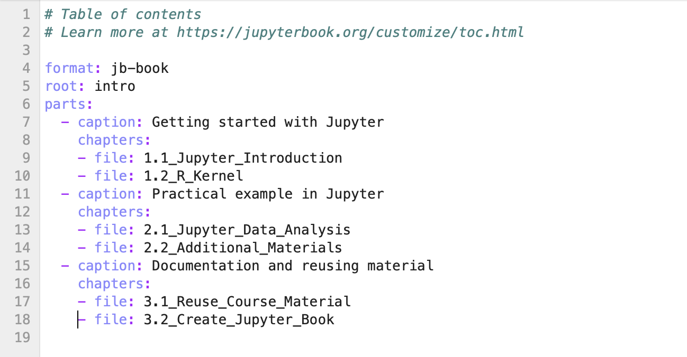
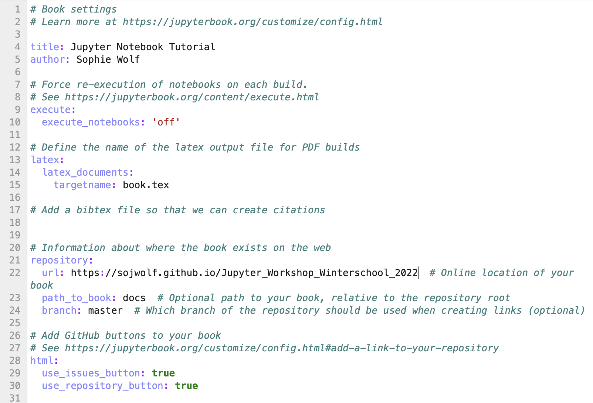
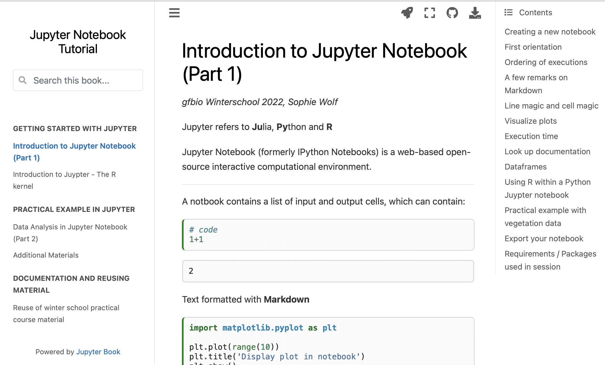
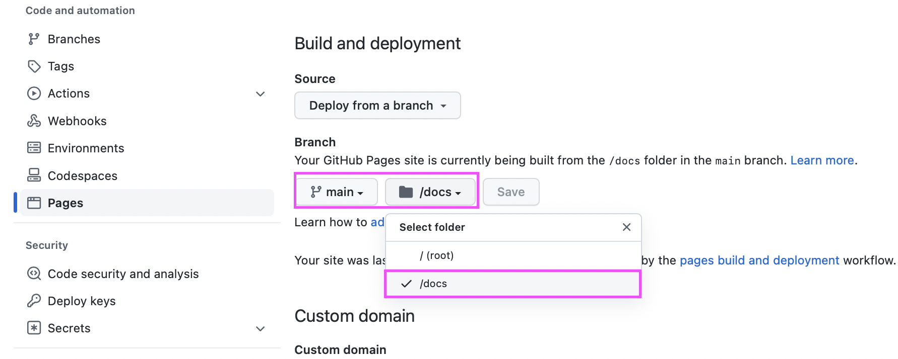
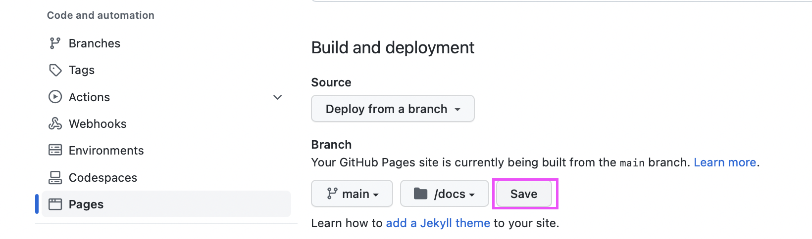
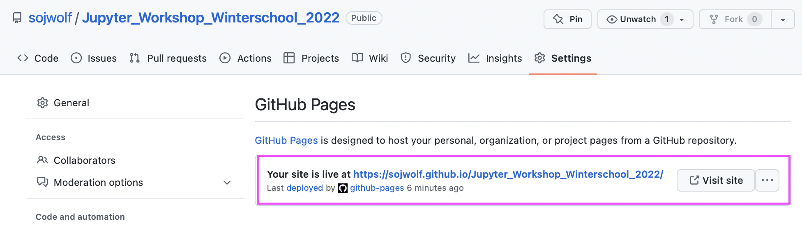

Publish your workflow as a Jupyter Book
Contents
Publish your workflow as a Jupyter Book#
The Jupyter Book is a great way to combine multiple analyses and document an entire workflow in html.
Here are some nice examples: https://executablebooks.org/en/latest/gallery.html
Most of the following content was taken from the Jupyter Book documentation: https://jupyterbook.org/en/stable/start/overview.html
Install Jupyter Book#
First, install Jupyter Book via pip:
!pip install -U jupyter-book
or via conda-forge:
!conda install -c conda-forge jupyter-book
Create Book#
Create first template#
%%bash
jupyter-book create JupyterTutorial/
Customize the template#
Open the NewJupyterBook/ directory and open the _config.yml file and the _toc.yml file.
Edit your _toc.yml (table of conents) file by:
adding the jupyter notebook and markdwon file names. You do not need to add the
*.ipynbendings.copy paste the notebook files to your book directory
keep intro file and customize it to your liking
delete all tem
Here is an example:

For more structure options (sub-sections, chapters etc.), refer to https://jupyterbook.org/en/stable/structure/toc.html
Next, edit the _config.yml file.
change the title
the author name
set excectue to
'off', if you do not want jupyter book to rerun all your code. Otherwise set toforce. This will rerun your code as it builds the book.

Build Book#
Check that you are in the directory that contains your book’s directory:
!ls
1.1_Jupyter_Introduction.ipynb Data
1.2_R_Kernel.ipynb Figures
2.1_Jupyter_Data_Analysis.ipynb JupyterTutorial
2.2_Additional_Materials.ipynb README.md
3.1_Reuse_Course_Material.ipynb binder
3.2_Create_Jupyter_Book.ipynb
Build your book
!jupyter-book build JupyterTutorial/
Running Jupyter-Book v0.13.1
Source Folder: /Users/sophiewolf/Documents/GitHub/Jupyter_Workshop_Winterschool_2022/JupyterTutorial
Config Path: /Users/sophiewolf/Documents/GitHub/Jupyter_Workshop_Winterschool_2022/JupyterTutorial/_config.yml
Output Path: /Users/sophiewolf/Documents/GitHub/Jupyter_Workshop_Winterschool_2022/JupyterTutorial/_build/html
Running Sphinx v4.5.0
[etoc] Changing master_doc to 'intro'
loading pickled environment... done
myst v0.15.2: MdParserConfig(renderer='sphinx', commonmark_only=False, enable_extensions=['colon_fence', 'dollarmath', 'linkify', 'substitution', 'tasklist'], dmath_allow_labels=True, dmath_allow_space=True, dmath_allow_digits=True, dmath_double_inline=False, update_mathjax=True, mathjax_classes='tex2jax_process|mathjax_process|math|output_area', disable_syntax=[], url_schemes=['mailto', 'http', 'https'], heading_anchors=None, heading_slug_func=None, html_meta=[], footnote_transition=True, substitutions=[], sub_delimiters=['{', '}'], words_per_minute=200)
building [mo]: targets for 0 po files that are out of date
building [html]: targets for 2 source files that are out of date
updating environment: 0 added, 2 changed, 0 removed
reading sources... [100%] 3.2_Create_Jupyter_Book
looking for now-outdated files... none found
pickling environment... done
checking consistency... done
preparing documents... done
writing output... [100%] intro
WARNING: Currently Binder/JupyterHub repositories must be on GitHub, got https://sojwolf.github.io/Jupyter_Workshop_Winterschool_2022
WARNING: Currently Binder/JupyterHub repositories must be on GitHub, got https://sojwolf.github.io/Jupyter_Workshop_Winterschool_2022
generating indices... genindex done
writing additional pages... search done
copying images... [100%] Figures/settings3.png 0mm
copying static files... done
copying extra files... done
dumping search index in English (code: en)... done
dumping object inventory... done
build succeeded, 2 warnings.
The HTML pages are in JupyterTutorial/_build/html.
===============================================================================
Finished generating HTML for book.
Your book's HTML pages are here:
JupyterTutorial/_build/html/
You can look at your book by opening this file in a browser:
JupyterTutorial/_build/html/index.html
Or paste this line directly into your browser bar:
file:///Users/sophiewolf/Documents/GitHub/Jupyter_Workshop_Winterschool_2022/JupyterTutorial/_build/html/index.html
===============================================================================
Navigate to JupyterTutorial/_build/html and open index.html to look at your book. It should look something like this:

Publish your book online#
There are many options to now incorporate the html code you have built into existing websites.
Publish inside your GitHub repository#
One easy and accessible and free way to publish your book is using GitHub pages:
Create a new repository or navigate to an exisitng one
Create a directory
docsin your repository’s main directoryCopy paste the content
BookName/_build/htmltodocs/Execute the following command inside the repository’s main directory:
!touch .nojekyll
!git add .nojekyll
Push all changes to GitHub.
Now open your repository in a browser and make the following configurations:
Click on Settings
Click on “Pages in the side bar”
Under “Source”, choose “Deploy from branch”

Choose main branch and
docs/

Click
Save

Your site link will now be available at the top of the page. Sometimes it takes some time until the site is avialable:

Click on the link to check out the result!